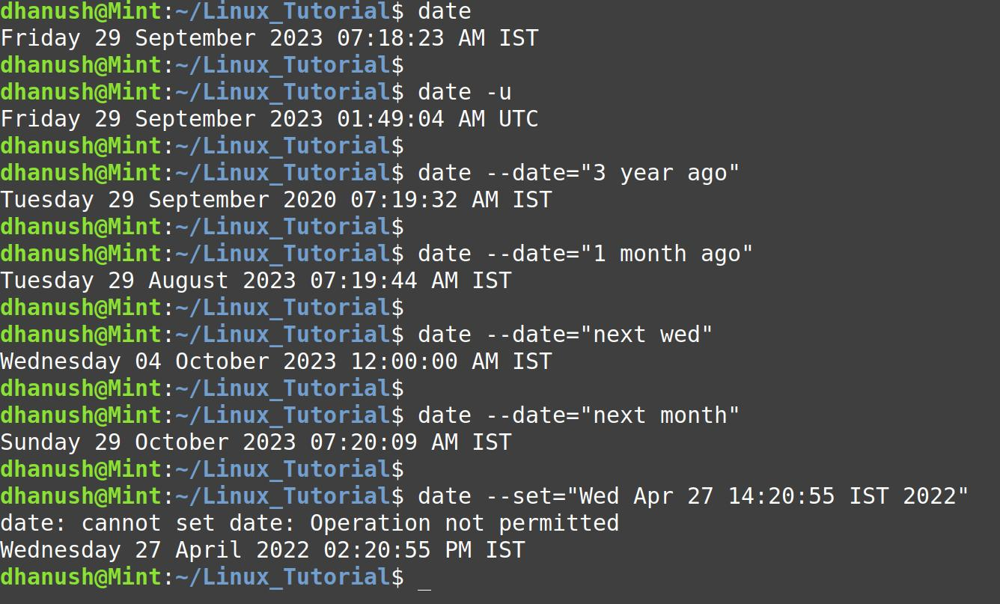

Date
Date command is used to display date.
date
To display the time in GMT/UTC time zone
date -u
To display past dates
date --date="3 year ago"
date --date="1 month ago"
To display future date
date --date="next wed"
date --date="next month"
To set the system date and time
Note: Need root permission hence use sudo.
date --set="Wed Apr 27 14:20:55 IST 2022"
Screenshot
